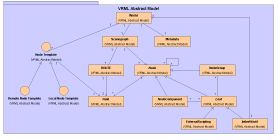
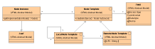
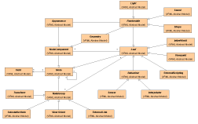

VRML Data Model
Author: Justin Couch
Last updated: $Date: 2001/05/02 00:48:50 $
Revision: $Revision: 1.4 $
Intro
This document outlines the underlying VRML data model, as provided by the VRML
specification. The same basic model is applicable to both VRML97 and the
in-progress VRML3.0.
Background
Neither of the VRML specifications define any sort of abstract model of what
they are trying to provide. In order to understand why we have implemented the
Xj3D codebase you really need to understand what VRML does.
VRML has been through 2 versions and is now starting a third version. In the
first two versions, the file syntax and the specification were one and the
same thing. There was no need to include an extra model. VRML 3.0 has added
two different ways of describing what you see on screen, so an abstract model
is needed. The spec process has not yielded a data model so we're doing this as
much for ourselves to try to understand what is going on as to illustrate to you.
Structural Overview
The model used by VRML follows the standard 3D graphics concept of a Scene
Graph - a tree style structure of geometry and information that represents
information in a spatial model. To this standard model it adds two extra
concepts of defining abstract collections and sending of messages from one
node to another outside of the low level rendering system.
Core Data
A scenegraph always has a root node that represents all of the information.
From this you can access all parts of the world. As figure 1 illustrates,
The world is then broken into three distinct parts:
- Meta data information
- Renderable data
- Node templates
Metadata contains basic information about the scene that does not necessarily
effect the rendering. Renderable data is what affects the output of the system,
the stuff you see on screen and hear through the speakers. Node defintions are
a way of providing a set of abstractions to make the file size smaller and to
make content more readable and manageable.

Figure 1: UML Structure diagram of the VRML abstract data model
Meta data
Meta data contains information that is not used in the rendering of the scene.
It however may effect the loading process or provided capabilities of the
renderer. It may also include zero impact information such as comments and
scene description information.
For VRML, the most important two pieces of information is the VRML version
that support is required for and for VRML 3.0, what nodes (profiles) should
be used or are needed for this world.
Node templates
A standard technique of programming languages is encapsulation - put a lot of
functionality behind a simple interface and just only ever deal with this
simplified interface. Node templates provide the same capabilities for the
scene graph. They are a way of providing a shortcut for collecting a group of
renderable functionality, which can be used within the renderable data.
Node templates do not provide actual renderable data. These templates
collect information. These templates can then be used within the renderable
data, and when they do a copy is made of the template and turned into a
concrete form.
Templates can be either contained within the file or as a reference to an
external file. In either case an interface is defined and a mapping between the
interface and the internal node template.
Renderable Data
Renderable data contains the bulk of the information in a normal file. This
is the template of the structure and geometry information. Renderable
data consists of nodes and fields. Fields describe attribute information of
the node, but in themselves contain attributes. This describes the type of
data represented, the name of the field, it's value and the type of access
provided to the field.
Data is presented in a tree like structure. As part of the rendered scene nodes
can be shared. This sharing can be used for all nodes. Sharing of nodes is a
performance enhancing tactic that is common in rendering.
To present the tree structure data consists of grouping nodes that can contain
other nodes and leaf nodes that cannot contain children. A leaf node also will
contain other items that help in it's definition that are also nodes. These are
turned node components. The difference here is that these cannot contain more
leaf nodes ad infinitum. There is a strict limit to the amount of associations
allowed.
Meta Data
Meta data is the collection of information about the scene without influencing
the actual scene graph structure. On the simplest level this could be just
string name/value pairs. On the complex level it could be geographical
projection information.
The values that meta provides or defines is defined by the user of the
information. There are two pieces of metadata that are always provided,
regardless of the realisation metadata
- The version of the VRML data model supported
- The list of profiles required by this scene to be rendered as the author
originally intended.
Profile information is not required for VRML97 as it had no idea about
modularity of node support.
Node Templates
Node templates are provided as a separate part of the world to the runtime
information. These act as an abstract definition of a node without being an
instance of it. Templates act as a way of collecting a bunch of useful
functionality into a single reusable item.

Figure 2: UML Structure diagram of the VRML template node classes
Templates must be able to create instances of themselves. To do this we
provide a creator method. This will take the definiton held inside the template
and create a concrete instance. This instance then can exist in the scenegraph.
An interesting feature of templates is that they must present their interface
as the public interface to the world. We are not allowed to expose the internal
contents to direct access. When we put this template into the scene graph,
we need to know what the underlying node type is so that we can check this
template is used in the correct place. Because of this we must present a
two-faced definition to the world of it's capabilites. As the proto interface
is the only thing we see for field purposes, it exists as a leaf node type.
However we also need to know the underlying type so we have to supply an
accessor to provide the implementation node types.
Rendered Nodes
As the bulk of the definitions, rendered nodes are the biggest specification.
As outlined earlier there are three different types of nodes:
- Grouping Nodes that contain other nodes
- Leaf nodes that describe something real
- Node components that contain extra attribute information
This distinction allows pieces to be built to describe a set of rendered
components that you see in figure 3. Now, we are being very deliberate in
describing these nodes a rendered components. In the virtual environment,
visual information is only one part of the total experience. In the real world
we also have sound, touch, taste and smell. All of these can be "rendered".
The only reason we don't see all of them in the virtual environment is that
they are impossible to reproduce in current hardware. This does not prevent
them from being provided, it is just that we must be aware that visual is not
the only type of information provided. All provided information must be
interpreted and presented to the user in an appropriate fashion.

Figure 3: UML Structure diagram of the VRML node types
Grouping Nodes
Grouping nodes contain other nodes. They are not renderable in and of
themselves. They effect how the rendered components are rendered though.
The common feature of them is that they contain collections of other grouping
nodes and leaf nodes.
As with all good designs, we then have classifications of different types of
nodes. The sub types of grouping nodes are breifly described below.
Transform
Transform nodes provide a way to move and distort child nodes. All their
children are effected in the same way. The effect is translated to the raw
coordinate information of the geometry as they get modified by the
transformation field information.
The effects of transforms are cummulative as the tree gets traversed from the
root to the leaf. A collection of transforms are added to together and then
applied to the coordinates of the geometry on the ends.
Selectable Node
Selection groups specify which children of a group should be rendered. The
selection process may be automatic such as level of detail or user driven with
a switching concept. It is possible that a selectable node may not make any of
it's children available to the rendering system.
View Orient
View orientation nodes act to always make their children transformed to
maintain some orientation relative to the current user position within the
rendered world. They are a form of transform grouping node, but have enough
differences to make them not be a rationalisation of the transform node types.
View orientations are dependent on each user in their view. It is possible
that a single scene graph may have multiple independent views. Unlike a
transform that has the exactly same effect in each view, a view orient group
acts independently and differently for each view.
External Link
Part of the virtual environment is the ability to jump from one world to
another. The external link grouping node provides that link to the children
node. The children nodes then become the way of triggering the link to the
external world. When this link is activated, it replaces the current world
with the contents of the external link, which may or may not be another
virtual world.
Exclusive Use Nodes
Exclusive use nodes means that only one of them can be active inside the
scenegraph at any one time. A second condition imposed on them is that nodes
cannot be shared among multiple scenegraph paths either directly or indirectly.
That is, there shall only ever be one path between the root of the scenegraph
and the exclusive use node. For example, it does not make sense to have two
different paths to a viewpoint that is currently in use. If both of the parent
paths changes a transformation, which one has an effect on the viewpoint.
Leaf Nodes
There are five forms of leaf nodes presented in figure 3:
- Representations of real renderable bits
- Fixed Behavioural actions
- External Scripting for programmable behaviours
- Viewpoints into the world
- Inlined contents of other worlds
Renderables
These nodes are what get turned into something you see, feel and hear (and
hopefully in the future smell and taste!). These are defined by the ability
to have geometry and appearance characteristics associated with them.
Geometry is the location that this renderable takes up (effected by parent
transformations) which appearance is the rendering characteristics.
There are three forms of renderables provided by the VRML model: visual,
aural and lighting. Visuals are the traditional box, cone and sphere type
things. Their appearance is influenced by colour and texture. Aural information
is represented by the area that the sound is heard in and the actual noise
itself, and the appearance is the soundscape properties (echo, delay, timbre
etc). For lights, the geometry is the influencing bounds of the light eg point
light or spotlight with it's direction and spread angle. The appearance of a
light is the colour it emits or effects like strobing.
Viewpoint
A viewpoint is a place in the scenegraph that we can hook to get a rendering
of the world. Multiple viewpoints allow us to quickly define things like
points of interest or different views of the same world from different windows
on a 2D type screen.
Behaviours
Behaviours are those that provide some form of automatic input to the scene.
These have a fixed implementation and do one specific task. Two of the most
common behaviours are sensors that capture data from some source (eg mouse,
keyboard or collision of two items). Interpolators provide a sliding scale
output of values defined by input values.
External Scripting
For many virtual environments, user programmable behaviours are a must have.
A lot of built in behaviours are not sufficient for the really cool content and
we cannot expect the specification authors to think of every single circumstance
that will ever need to be covered. This allows capturing of these extra
requirements in a form that the content provider is capable of.
Inlined Contents
One form of world building is composition of a number of smaller worlds. This
leverages the ability of other content creators to build a bigger picture.
Frequently this is also used as a way to get fast loading of worlds by breaking
them into smaller pieces and then compositing in a larger world. The inline
allows us a way to specify the location of this content and position it within
the bigger world.
Node Components
Components of nodes provide attribute information. These are different than
normal fields in that they provide a large collection of attribute information
that may be shared between instances of nodes. A single field cannot be shared,
nor can it's value. Only nodes can be shared, so a node component offers this
in convenient form.
References